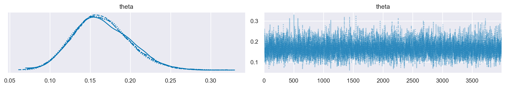
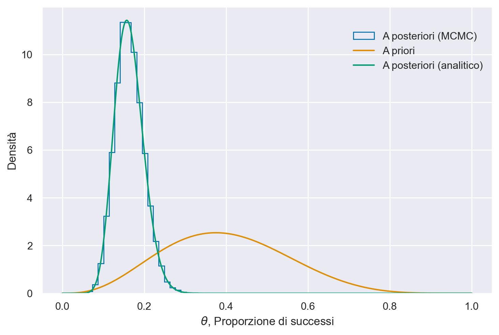
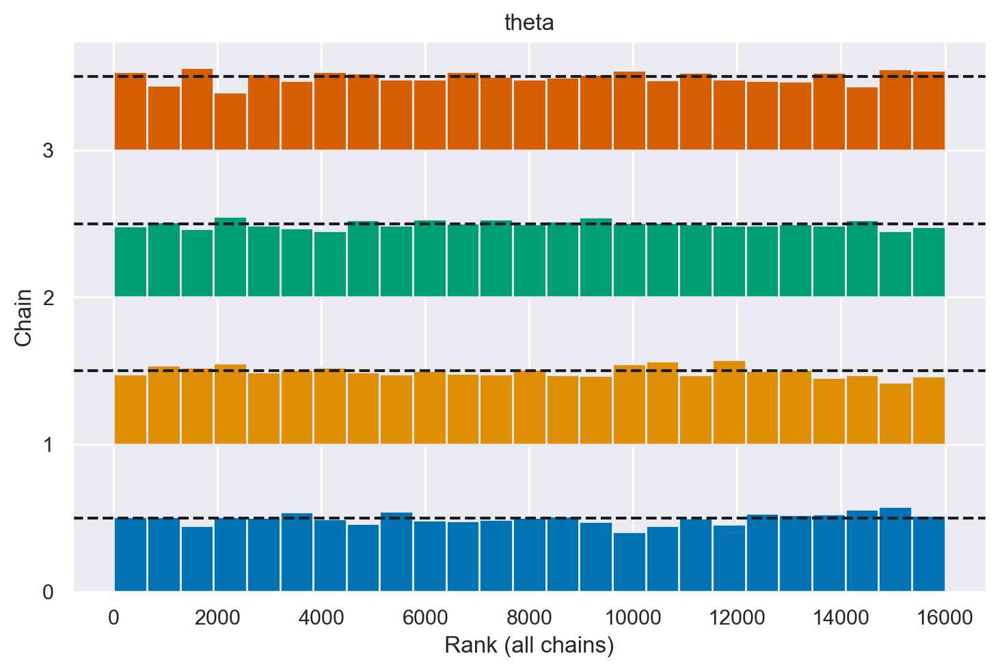
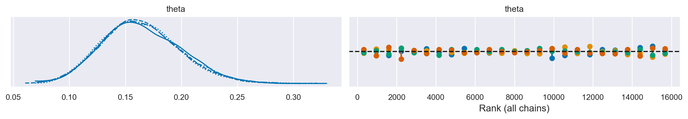
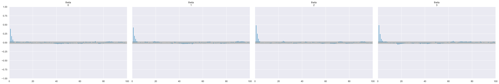
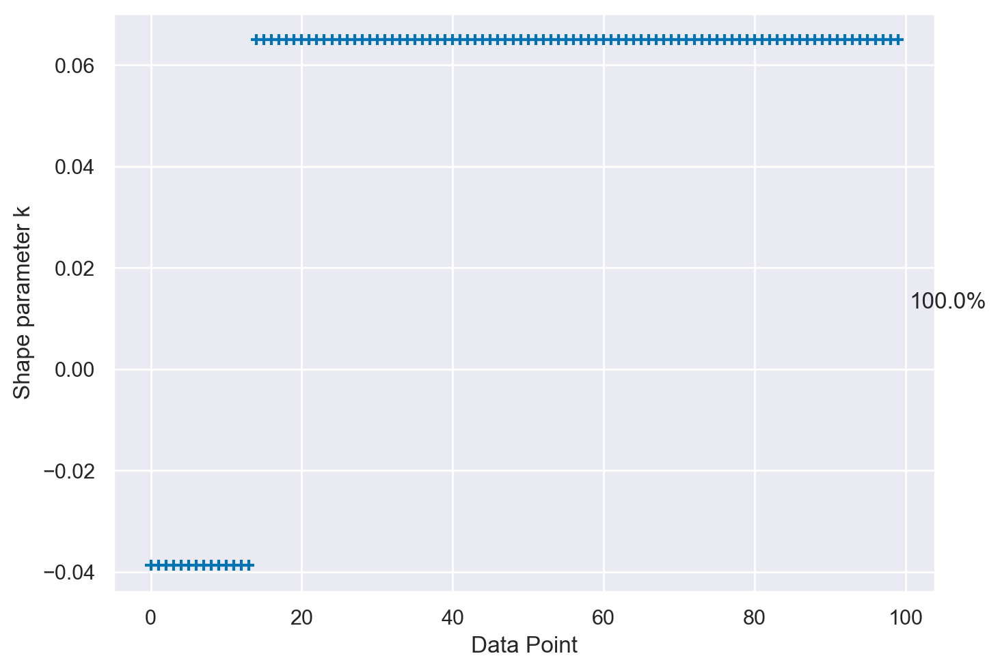
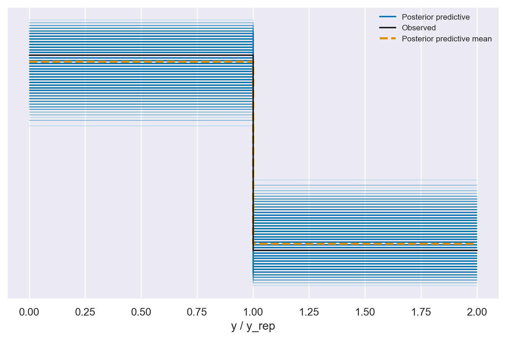

CmdStanPy#
Nel presente capitolo, presenteremo un linguaggio di programmazione probabilistica denominato Stan. Stan consente di estrarre campioni da distribuzioni di probabilità mediante la costruzione di una catena di Markov, la cui distribuzione di equilibrio (o stazionaria) coincide con la distribuzione desiderata. Il nome del linguaggio deriva da uno dei pionieri del metodo Monte Carlo, Stanislaw Ulam. Un’introduzione dettagliata al linguaggio Stan è fornita in Linguaggio Stan. in questo capitolo, utilizzeremo Stan per fare inferenza su una proporzione.
Il linguaggio di programmazione probabilistica Stan è compatibile con diverse piattaforme e offre varie interfacce (R, Python, Julia). Nel caso presente, useremo cmdstanpy, un’interfaccia leggera per Stan pensata per gli utenti di Python.
CmdStanPy è un pacchetto puramente in Python3 che è un wrapper di CmdStan, l’interfaccia a riga di comando per Stan scritta in C++. Pertanto, oltre a Python3, CmdStanPy richiede un toolchain C++ moderno per compilare ed eseguire i modelli Stan.
La procedura per installare CmdStanPy e i componenti sottostanti di CmdStan dal repository conda-forge è descritta nel capitolo Ambienti virtuali.
Preparazione del Notebook#
Una volta creato l’ambiente conda stan_env, attiviamo il kernel di Visual Studio Code selezionando questo ambiente virtuale. Possiamo quindi caricare i pacchetti necessari.
import os
import numpy as np
import pandas as pd
import matplotlib.pyplot as plt
import seaborn as sns
import scipy.stats as stats
import arviz as az
import warnings
from cmdstanpy import cmdstan_path, CmdStanModel
---------------------------------------------------------------------------
ModuleNotFoundError Traceback (most recent call last)
Cell In[1], line 9
7 import arviz as az
8 import warnings
----> 9 from cmdstanpy import cmdstan_path, CmdStanModel
ModuleNotFoundError: No module named 'cmdstanpy'
%config InlineBackend.figure_format = 'retina'
# Initialize random number generator
RANDOM_SEED = 8927
rng = np.random.default_rng(RANDOM_SEED)
az.style.use("arviz-darkgrid")
In questo tutorial ripeteremo l’analisi descritta nel capitolo Inferenza bayesiana con PyMC, ovvero considereremo un modello beta-binomiale. I dati sono quelli dell’esempio relativo agli artisti della Generazione X rappresentati al MOMA. Esaminando 100 opere a caso, abbiamo registrato 14 successi su 100 tentativi. Abbiamo deciso di imporre sul parametro \( \theta \) (la probabilità di appartenere alla Generazione X o a generazioni successive) una distribuzione a priori Beta(4, 6).
Il nostro modello è il seguente:
Il modello deve essere scritto in linguaggio Stan in un file con l’estensione .stan. Nel caso presente, tale file è presente nella cartella stan ed è chiamato bernoulli_model.stan. Possiamo stamparlo nel notebook nel modo seguente:
stan_file = os.path.join('stan', 'beta_binomial_model.stan')
with open(stan_file, 'r') as f:
print(f.read())
data {
int<lower=0> N; // Numero di prove
array[N] int<lower=0> y; // Dati osservati per ogni prova
real<lower=0> alpha_prior; // Parametro alpha della distribuzione Beta a priori
real<lower=0> beta_prior; // Parametro beta della distribuzione Beta a priori
}
parameters {
real<lower=0, upper=1> theta; // Probabilità di successo
}
model {
// Prior
theta ~ beta(alpha_prior, beta_prior);
// Likelihood
y ~ bernoulli(theta);
}
generated quantities {
array[N] int<lower=0, upper=1> y_rep; // generated data for posterior predictive checks
array[N] real log_lik; // log likelihood for each observation
for (n in 1:N) {
y_rep[n] = bernoulli_rng(theta); // simulate new data based on posterior of theta
log_lik[n] = bernoulli_lpmf(y[n] | theta); // calculate log likelihood for each observed data point
}
}
Per svolgere l’analisi mediante cmdstanpy è necessario prima specificare la struttura del modello bayesiano nella notazione Stan e, poi, eseguire il campionamento dalla distribuzione a posteriori. Esaminiamo questi due passaggi per l’esempio presente.
Nella prima fase dell’analisi dobbiamo specificare il modello. Nel codice precedente, il blocco data specifica i dati che saranno passati in input a Stan. Nel caso presente, abbiamo N che è un numero intero (con valore minimo 0) e y. L’array y è costituito da N elementi i quali hanno valore minimo 0 e valore massimo 1.
Il blocco parameters specifica che il parametro theta è un valore reale che può assumere valore minimo 0 e valore massimo 1.
Il blocco model specifica la verosimiglianza y ~ bernoulli(theta);. Nel caso presente diciamo che ciascuna osservazione di y è una variabile casuale di Bernoulli di parametro theta. È anche necessario specificare la distribuzione a priori theta: theta ~ beta(4, 6);. In questo esempio, imponiamo su theta una Beta(4, 6).
Utilizzando il seguente link si può ottenere una formattazione automatica del codice e anche, in qualche misura, una correzione della sintassi.
Per utilizzare il modello che abbiamo specificato, prima leggiamo l’indirizzo del file che contiene il codice Stan. Abbiamo già ottenuto questo in precedenza con l’istruzione stan_file = os.path.join('stan', 'bernoulli_model.stan').
Possiamo ora compilare il codice Stan. Questo crea un file eseguibile che, nel caso presente, abbiamo chiamato model.
model = CmdStanModel(stan_file=stan_file)
print(model)
07:29:19 - cmdstanpy - INFO - compiling stan file /Users/corrado/_repositories/ds4p/chapter_4/stan/beta_binomial_model.stan to exe file /Users/corrado/_repositories/ds4p/chapter_4/stan/beta_binomial_model
07:29:39 - cmdstanpy - INFO - compiled model executable: /Users/corrado/_repositories/ds4p/chapter_4/stan/beta_binomial_model
CmdStanModel: name=beta_binomial_model
stan_file=/Users/corrado/_repositories/ds4p/chapter_4/stan/beta_binomial_model.stan
exe_file=/Users/corrado/_repositories/ds4p/chapter_4/stan/beta_binomial_model
compiler_options=stanc_options={}, cpp_options={}
I dati devono essere contenuti in un dizionario. Nel caso presente, il dizionario data può essere creato nel modo seguente.
y = np.zeros(100, dtype=int)
y[:14] = 1
data = {
"N" : 100,
"y" : y,
"alpha_prior" : 4,
"beta_prior" : 6
}
print(data)
{'N': 100, 'y': array([1, 1, 1, 1, 1, 1, 1, 1, 1, 1, 1, 1, 1, 1, 0, 0, 0, 0, 0, 0, 0, 0,
0, 0, 0, 0, 0, 0, 0, 0, 0, 0, 0, 0, 0, 0, 0, 0, 0, 0, 0, 0, 0, 0,
0, 0, 0, 0, 0, 0, 0, 0, 0, 0, 0, 0, 0, 0, 0, 0, 0, 0, 0, 0, 0, 0,
0, 0, 0, 0, 0, 0, 0, 0, 0, 0, 0, 0, 0, 0, 0, 0, 0, 0, 0, 0, 0, 0,
0, 0, 0, 0, 0, 0, 0, 0, 0, 0, 0, 0]), 'alpha_prior': 4, 'beta_prior': 6}
Possiamo ora eseguire il campionamento MCMC con la seguente chiamata.
fit = model.sample(
data=data,
iter_sampling = 4000,
iter_warmup = 2000,
seed = 84735,
chains = 4
)
Show code cell output
07:29:46 - cmdstanpy - INFO - CmdStan start processing
chain 1 | | 00:00 Status
chain 1 |████▎ | 00:00 Iteration: 2400 / 6000 [ 40%] (Sampling)
chain 1 |████████▍ | 00:00 Iteration: 4900 / 6000 [ 81%] (Sampling)
chain 1 |██████████| 00:00 Sampling completed
chain 2 |██████████| 00:00 Sampling completed
chain 3 |██████████| 00:00 Sampling completed
chain 4 |██████████| 00:00 Sampling completed
07:29:47 - cmdstanpy - INFO - CmdStan done processing.
Si noti che $sample() è un “metodo” che viene applicato al file eseguibile che abbiamo compilato, al quale è stato assegnato il nome model.
Il metodo $sample() richiede una serie di argomenti.
data, ovvero i dati in input contenuti in un dizionario (nel caso presente,data).chainsspecifica quante catene di Markov parallele eseguire. Eseguiamo qui quattro catene, quindi otterremo quattro campioni distinti di valori \(\theta\).iterspecifica il numero desiderato di iterazioni o la lunghezza di ciascuna catena di Markov. Per impostazione predefinita, la prima metà di queste iterazioni è costituita da campioni “burn-in” o “warm-up” che verranno ignorati. La seconda metà è conservata e costituisce un campione della distribuzione a posteriori.iter_warmupspecifica il numero di campioni “warm-up” che vogliamo vengano ignorati.seedimposta il numero casuale che viene usato per generare il punto di partenza di ciascuna catena di Markov.
Avendo assunto una distribuzione a priori per il parametro \(\theta\), l’algoritmo procede in maniera ciclica, correggendo la distribuzione a priori di \(\theta\) condizionandola ai valori già generati. Dopo un certo numero di cicli, necessari per portare l’algoritmo a convergenza, i valori estratti possono essere assunti come campionati dalla distribuzione a posteriori di \(\theta\).
Al crescere del numero di passi della catena, la distribuzione di target viene sempre meglio approssimata. All’inizio del campionamento, però, la distribuzione può essere significativamente lontana da quella stazionaria, e ci vuole un certo tempo prima di raggiungere la distribuzione stazionaria di equilibrio, detto, appunto, periodo di burn-in. I campioni provenienti da tale parte iniziale della catena vanno tipicamente scartati perché possono non rappresentare accuratamente la distribuzione a posteriori.
Un sommario della distribuzione a posteriori del parametro theta si può ottenere con il metodo summary()
print(fit.summary())
Mean MCSE StdDev 5% 50% 95% \
lp__ -49.520500 0.009097 0.715962 -50.934700 -49.245500 -49.023700
theta 0.164082 0.000457 0.035006 0.109924 0.161850 0.224372
y_rep[1] 0.163500 0.002937 0.369833 0.000000 0.000000 1.000000
y_rep[2] 0.161188 0.002888 0.367715 0.000000 0.000000 1.000000
y_rep[3] 0.167063 0.002994 0.373043 0.000000 0.000000 1.000000
... ... ... ... ... ... ...
log_lik[96] -0.180113 0.000551 0.042295 -0.254083 -0.176555 -0.116465
log_lik[97] -0.180113 0.000551 0.042295 -0.254083 -0.176555 -0.116465
log_lik[98] -0.180113 0.000551 0.042295 -0.254083 -0.176555 -0.116465
log_lik[99] -0.180113 0.000551 0.042295 -0.254083 -0.176555 -0.116465
log_lik[100] -0.180113 0.000551 0.042295 -0.254083 -0.176555 -0.116465
N_Eff N_Eff/s R_hat
lp__ 6194.82 4832.15 1.00065
theta 5869.12 4578.10 1.00011
y_rep[1] 15858.60 12370.20 1.00019
y_rep[2] 16213.20 12646.80 1.00002
y_rep[3] 15528.30 12112.60 1.00000
... ... ... ...
log_lik[96] 5895.77 4598.88 1.00011
log_lik[97] 5895.77 4598.88 1.00011
log_lik[98] 5895.77 4598.88 1.00011
log_lik[99] 5895.77 4598.88 1.00011
log_lik[100] 5895.77 4598.88 1.00011
[202 rows x 9 columns]
print(fit.diagnose())
Processing csv files: /var/folders/cl/wwjrsxdd5tz7y9jr82nd5hrw0000gn/T/tmp79zm0y5k/beta_binomial_modeliujb6mda/beta_binomial_model-20240228072946_1.csv, /var/folders/cl/wwjrsxdd5tz7y9jr82nd5hrw0000gn/T/tmp79zm0y5k/beta_binomial_modeliujb6mda/beta_binomial_model-20240228072946_2.csv, /var/folders/cl/wwjrsxdd5tz7y9jr82nd5hrw0000gn/T/tmp79zm0y5k/beta_binomial_modeliujb6mda/beta_binomial_model-20240228072946_3.csv, /var/folders/cl/wwjrsxdd5tz7y9jr82nd5hrw0000gn/T/tmp79zm0y5k/beta_binomial_modeliujb6mda/beta_binomial_model-20240228072946_4.csv
Checking sampler transitions treedepth.
Treedepth satisfactory for all transitions.
Checking sampler transitions for divergences.
No divergent transitions found.
Checking E-BFMI - sampler transitions HMC potential energy.
E-BFMI satisfactory.
Effective sample size satisfactory.
Split R-hat values satisfactory all parameters.
Processing complete, no problems detected.
L’oggetto fit generato da cmdstanpy appartiene alla classe cmdstanpy.stanfit.mcmc.CmdStanMCMC. Questo oggetto è funzionalmente equivalente a un oggetto della classe InferenceData, permettendo quindi la sua manipolazione tramite le funzioni fornite da ArviZ.
type(fit)
cmdstanpy.stanfit.mcmc.CmdStanMCMC
az.summary(fit, var_names=("theta"), hdi_prob=0.95)
| mean | sd | hdi_2.5% | hdi_97.5% | mcse_mean | mcse_sd | ess_bulk | ess_tail | r_hat | |
|---|---|---|---|---|---|---|---|---|---|
| theta | 0.164 | 0.035 | 0.1 | 0.235 | 0.0 | 0.0 | 5810.0 | 6591.0 | 1.0 |
_ = az.plot_trace(fit, var_names=("theta"))

post = az.extract(fit)
post
<xarray.Dataset> Size: 13MB
Dimensions: (sample: 16000, y_rep_dim_0: 100)
Coordinates:
* y_rep_dim_0 (y_rep_dim_0) int64 800B 0 1 2 3 4 5 6 ... 93 94 95 96 97 98 99
* sample (sample) object 128kB MultiIndex
* chain (sample) int64 128kB 0 0 0 0 0 0 0 0 0 0 ... 3 3 3 3 3 3 3 3 3
* draw (sample) int64 128kB 0 1 2 3 4 5 ... 3995 3996 3997 3998 3999
Data variables:
theta (sample) float64 128kB 0.1469 0.1473 0.1505 ... 0.1629 0.155
y_rep (y_rep_dim_0, sample) float64 13MB 0.0 0.0 0.0 ... 0.0 0.0 0.0
Attributes:
created_at: 2024-02-28T06:30:19.558749
arviz_version: 0.17.0
inference_library: cmdstanpy
inference_library_version: 1.2.1post["theta"].shape
(16000,)
Le istruzioni successive possono essere impiegate per ricreare la stessa rappresentazione grafica presentata nel capitolo Inferenza bayesiana con PyMC, utilizzando la traccia generata da cmdstanpy. La figura visualizza sia la distribuzione a posteriori ottenuta tramite cmdstanpy, sia quella derivata analiticamente.
alpha_prior = 4
beta_prior = 6
p_post = post["theta"]
# Posterior: Beta(alpha + y, beta + n - y)
alpha_post = alpha_prior + np.sum(data["y"])
beta_post = beta_prior + data["N"] - np.sum(data["y"])
plt.hist(
p_post,
bins=20,
histtype="step",
density=True,
label="A posteriori (MCMC)",
color="C0",
)
# Plot the analytic prior and posterior beta distributions
x = np.linspace(0, 1, 500)
plt.plot(
x, stats.beta.pdf(x, alpha_prior, beta_prior), label="A priori", color="C1"
)
plt.plot(
x,
stats.beta.pdf(x, alpha_post, beta_post),
label="A posteriori (analitico)",
color="C2",
)
# Update the graph labels
plt.legend(title=" ", loc="best")
plt.xlabel("$\\theta$, Proporzione di successi")
plt.ylabel("Densità")
Text(0, 0.5, 'Densità')

_ = az.plot_rank(fit, var_names="theta", kind="bars")

_ = az.plot_trace(fit, var_names=("theta"), kind="rank_vlines")

_ = az.plot_autocorr(fit, var_names=("theta"))

loo = az.loo(fit, pointwise=True)
_ = az.plot_khat(loo, show_bins=True)

Possiamo convertire l’oggetto fit in un oggetto di classe InferenceData nel modo seguente:
post = az.convert_to_inference_data(fit)
post
-
<xarray.Dataset> Size: 13MB Dimensions: (chain: 4, draw: 4000, y_rep_dim_0: 100) Coordinates: * chain (chain) int64 32B 0 1 2 3 * draw (draw) int64 32kB 0 1 2 3 4 5 ... 3994 3995 3996 3997 3998 3999 * y_rep_dim_0 (y_rep_dim_0) int64 800B 0 1 2 3 4 5 6 ... 93 94 95 96 97 98 99 Data variables: theta (chain, draw) float64 128kB 0.1469 0.1473 ... 0.1629 0.155 y_rep (chain, draw, y_rep_dim_0) float64 13MB 0.0 0.0 0.0 ... 0.0 0.0 Attributes: created_at: 2024-02-28T06:30:46.320717 arviz_version: 0.17.0 inference_library: cmdstanpy inference_library_version: 1.2.1 -
<xarray.Dataset> Size: 13MB Dimensions: (chain: 4, draw: 4000, log_lik_dim_0: 100) Coordinates: * chain (chain) int64 32B 0 1 2 3 * draw (draw) int64 32kB 0 1 2 3 4 5 ... 3995 3996 3997 3998 3999 * log_lik_dim_0 (log_lik_dim_0) int64 800B 0 1 2 3 4 5 ... 94 95 96 97 98 99 Data variables: log_lik (chain, draw, log_lik_dim_0) float64 13MB -1.918 ... -0.1684 Attributes: created_at: 2024-02-28T06:30:46.332127 arviz_version: 0.17.0 inference_library: cmdstanpy inference_library_version: 1.2.1 -
<xarray.Dataset> Size: 816kB Dimensions: (chain: 4, draw: 4000) Coordinates: * chain (chain) int64 32B 0 1 2 3 * draw (draw) int64 32kB 0 1 2 3 4 5 ... 3995 3996 3997 3998 3999 Data variables: lp (chain, draw) float64 128kB -49.14 -49.14 ... -49.02 -49.05 acceptance_rate (chain, draw) float64 128kB 0.991 0.991 ... 0.9984 0.9924 step_size (chain, draw) float64 128kB 0.8115 0.8115 ... 1.021 1.021 tree_depth (chain, draw) int64 128kB 1 2 2 2 2 1 2 2 ... 1 1 2 1 1 2 1 n_steps (chain, draw) int64 128kB 1 3 3 3 7 1 7 3 ... 1 3 3 3 1 3 3 diverging (chain, draw) bool 16kB False False False ... False False energy (chain, draw) float64 128kB 49.14 49.27 ... 49.54 49.06 Attributes: created_at: 2024-02-28T06:30:46.327494 arviz_version: 0.17.0 inference_library: cmdstanpy inference_library_version: 1.2.1
Per creare un PPC plot dobbiamo innanzitutto creare un oggetto InferenceData nel quale i dati sono strutturati come si aspetta Arviz:
idata = az.from_cmdstanpy(
posterior=fit,
posterior_predictive='y_rep',
dtypes={"y_rep": int},
observed_data={'y': data["y"]},
)
_ = az.plot_ppc(idata, data_pairs={'y': 'y_rep'})
/Users/corrado/opt/anaconda3/envs/stan_env/lib/python3.12/site-packages/arviz/plots/ppcplot.py:267: FutureWarning: The return type of `Dataset.dims` will be changed to return a set of dimension names in future, in order to be more consistent with `DataArray.dims`. To access a mapping from dimension names to lengths, please use `Dataset.sizes`.
flatten_pp = list(predictive_dataset.dims.keys())
/Users/corrado/opt/anaconda3/envs/stan_env/lib/python3.12/site-packages/arviz/plots/ppcplot.py:271: FutureWarning: The return type of `Dataset.dims` will be changed to return a set of dimension names in future, in order to be more consistent with `DataArray.dims`. To access a mapping from dimension names to lengths, please use `Dataset.sizes`.
flatten = list(observed_data.dims.keys())

Watermark#
%load_ext watermark
%watermark -n -u -v -iv -w -m -p cmdstanpy
Last updated: Wed Feb 28 2024
Python implementation: CPython
Python version : 3.12.2
IPython version : 8.22.1
cmdstanpy: 1.2.1
Compiler : Clang 16.0.6
OS : Darwin
Release : 23.3.0
Machine : x86_64
Processor : i386
CPU cores : 8
Architecture: 64bit
seaborn : 0.13.2
numpy : 1.26.4
arviz : 0.17.0
pandas : 2.2.1
scipy : 1.12.0
matplotlib: 3.8.3
Watermark: 2.4.3